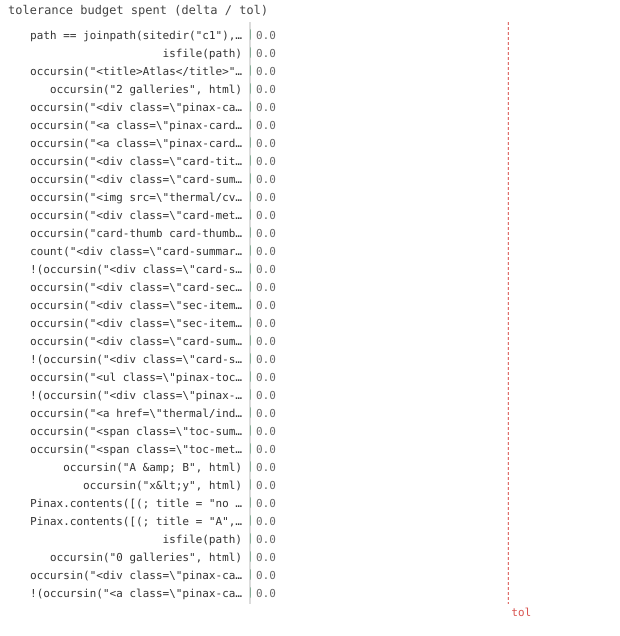

32/32 passed · 0.89s
| id | label | got | want | Δ vs tol (kind) | |
|---|---|---|---|---|---|
| ✓ | t214 | path == joinpath(sitedir("c1"), "index.html") @ test_contents.jl:24 code | 1.0 | 1.0 | 0.0 vs 0.5 (abs) |
| ✓ | t215 | isfile(path) @ test_contents.jl:25 code | 1.0 | 1.0 | 0.0 vs 0.5 (abs) |
| ✓ | t216 | occursin("<title>Atlas</title>", html) @ test_contents.jl:30 code | 1.0 | 1.0 | 0.0 vs 0.5 (abs) |
| ✓ | t217 | occursin("2 galleries", html) @ test_contents.jl:31 code | 1.0 | 1.0 | 0.0 vs 0.5 (abs) |
| ✓ | t218 | occursin("<div class=\"pinax-cards\">", html) @ test_contents.jl:32 code | 1.0 | 1.0 | 0.0 vs 0.5 (abs) |
| ✓ | t219 | occursin("<a class=\"pinax-card\" href=\"thermal/index.html\">", html) @ test_contents.jl:33 code | 1.0 | 1.0 | 0.0 vs 0.5 (abs) |
| ✓ | t220 | occursin("<a class=\"pinax-card\" href=\"quench/index.html\">", html) @ test_contents.jl:34 code | 1.0 | 1.0 | 0.0 vs 0.5 (abs) |
| ✓ | t221 | occursin("<div class=\"card-title\">Thermal</div>", html) @ test_contents.jl:35 code | 1.0 | 1.0 | 0.0 vs 0.5 (abs) |
| ✓ | t222 | occursin("<div class=\"card-summary\">Equilibrium TPQ</div>", html) @ test_contents.jl:36 code | 1.0 | 1.0 | 0.0 vs 0.5 (abs) |
| ✓ | t223 | occursin("<img src=\"thermal/cv.svg\"", html) @ test_contents.jl:37 code | 1.0 | 1.0 | 0.0 vs 0.5 (abs) |
| ✓ | t224 | occursin("<div class=\"card-meta\">3 pages · 40 figures</div>", html) @ test_contents.jl:38 code | 1.0 | 1.0 | 0.0 vs 0.5 (abs) |
| ✓ | t225 | occursin("card-thumb card-thumb-empty", html) @ test_contents.jl:40 code | 1.0 | 1.0 | 0.0 vs 0.5 (abs) |
| ✓ | t226 | count("<div class=\"card-summary\">", html) == 1 @ test_contents.jl:41 code | 1.0 | 1.0 | 0.0 vs 0.5 (abs) |
| ✓ | t227 | !(occursin("<div class=\"card-sections\">", html)) @ test_contents.jl:42 code | 1.0 | 1.0 | 0.0 vs 0.5 (abs) |
| ✓ | t228 | occursin("<div class=\"card-sections\">", html) @ test_contents.jl:49 code | 1.0 | 1.0 | 0.0 vs 0.5 (abs) |
| ✓ | t229 | occursin("<div class=\"sec-item\">Heat capacity</div>", html) @ test_contents.jl:50 code | 1.0 | 1.0 | 0.0 vs 0.5 (abs) |
| ✓ | t230 | occursin("<div class=\"sec-item\">Entropy</div>", html) @ test_contents.jl:51 code | 1.0 | 1.0 | 0.0 vs 0.5 (abs) |
| ✓ | t231 | occursin("<div class=\"card-summary\">Equilibrium TPQ</div>", html) @ test_contents.jl:52 code | 1.0 | 1.0 | 0.0 vs 0.5 (abs) |
| ✓ | t232 | !(occursin("<div class=\"card-sections\">", empty_items)) @ test_contents.jl:62 code | 1.0 | 1.0 | 0.0 vs 0.5 (abs) |
| ✓ | t233 | occursin("<ul class=\"pinax-toc\">", html) @ test_contents.jl:69 code | 1.0 | 1.0 | 0.0 vs 0.5 (abs) |
| ✓ | t234 | !(occursin("<div class=\"pinax-cards\">", html)) @ test_contents.jl:70 code | 1.0 | 1.0 | 0.0 vs 0.5 (abs) |
| ✓ | t235 | occursin("<a href=\"thermal/index.html\">Thermal</a>", html) @ test_contents.jl:71 code | 1.0 | 1.0 | 0.0 vs 0.5 (abs) |
| ✓ | t236 | occursin("<span class=\"toc-summary\">— Equilibrium TPQ</span>", html) @ test_contents.jl:72 code | 1.0 | 1.0 | 0.0 vs 0.5 (abs) |
| ✓ | t237 | occursin("<span class=\"toc-meta\">(3 pages · 40 figures)</span>", html) @ test_contents.jl:73 code | 1.0 | 1.0 | 0.0 vs 0.5 (abs) |
| ✓ | t238 | occursin("A & B", html) @ test_contents.jl:83 code | 1.0 | 1.0 | 0.0 vs 0.5 (abs) |
| ✓ | t239 | occursin("x<y", html) @ test_contents.jl:84 code | 1.0 | 1.0 | 0.0 vs 0.5 (abs) |
| ✓ | t240 | Pinax.contents([(; title = "no href")]; out = sitedir("e1")) @ test_contents.jl:88 code | 1.0 | 1.0 | 0.0 vs 0.5 (abs) |
| ✓ | t241 | Pinax.contents([(; title = "A", href = "a.html")]; out = sitedir("e2"), level = :bogus) @ test_contents.jl:89 code | 1.0 | 1.0 | 0.0 vs 0.5 (abs) |
| ✓ | t242 | isfile(path) @ test_contents.jl:97 code | 1.0 | 1.0 | 0.0 vs 0.5 (abs) |
| ✓ | t243 | occursin("0 galleries", html) @ test_contents.jl:98 code | 1.0 | 1.0 | 0.0 vs 0.5 (abs) |
| ✓ | t244 | occursin("<div class=\"pinax-cards\">", html) @ test_contents.jl:99 code | 1.0 | 1.0 | 0.0 vs 0.5 (abs) |
| ✓ | t245 | !(occursin("<a class=\"pinax-card\"", html)) @ test_contents.jl:100 code | 1.0 | 1.0 | 0.0 vs 0.5 (abs) |

⤓ downloadpath = Pinax.contents(entries; out=sitedir("c1"), title="Atlas")
@test path == joinpath(sitedir("c1"), "index.html")@test isfile(path)html = read(Pinax.contents(entries; out=sitedir("c2"), title="Atlas"), String)
@test occursin("<title>Atlas</title>", html)@test occursin("2 galleries", html)@test occursin("<div class=\"pinax-cards\">", html)@test occursin("<a class=\"pinax-card\" href=\"thermal/index.html\">", html)@test occursin("<a class=\"pinax-card\" href=\"quench/index.html\">", html)@test occursin("<div class=\"card-title\">Thermal</div>", html)@test occursin("<div class=\"card-summary\">Equilibrium TPQ</div>", html)@test occursin("<img src=\"thermal/cv.svg\"", html) # thumbnail referenced as-is@test occursin("<div class=\"card-meta\">3 pages · 40 figures</div>", html)@test occursin("card-thumb card-thumb-empty", html)@test count("<div class=\"card-summary\">", html) == 1 # only Thermal has one@test !occursin("<div class=\"card-sections\">", html) # items shown only at :richhtml = read(
Pinax.contents(entries; out=sitedir("c3"), title="Atlas", level=:rich), String
)
@test occursin("<div class=\"card-sections\">", html)@test occursin("<div class=\"sec-item\">Heat capacity</div>", html)@test occursin("<div class=\"sec-item\">Entropy</div>", html)@test occursin("<div class=\"card-summary\">Equilibrium TPQ</div>", html) # still shownempty_items = read(
Pinax.contents(
[(; title="A", href="a.html", items=String[])];
out=sitedir("c3b"),
level=:rich,
),
String,
)
@test !occursin("<div class=\"card-sections\">", empty_items)html = read(
Pinax.contents(entries; out=sitedir("c4"), title="Atlas", level=:toc), String
)
@test occursin("<ul class=\"pinax-toc\">", html)@test !occursin("<div class=\"pinax-cards\">", html)@test occursin("<a href=\"thermal/index.html\">Thermal</a>", html)@test occursin("<span class=\"toc-summary\">— Equilibrium TPQ</span>", html)@test occursin("<span class=\"toc-meta\">(3 pages · 40 figures)</span>", html)html = read(
Pinax.contents(
[(; title="A & B", href="a.html", summary="x<y")]; out=sitedir("c5")
),
String,
)
@test occursin("A & B", html)@test occursin("x<y", html)@test_throws ErrorException Pinax.contents([(; title="no href")]; out=sitedir("e1"))@test_throws ErrorException Pinax.contents(
[(; title="A", href="a.html")]; out=sitedir("e2"), level=:bogus
)path = Pinax.contents(NamedTuple[]; out=sitedir("c6"), title="Empty Atlas")
html = read(path, String)
@test isfile(path)@test occursin("0 galleries", html)@test occursin("<div class=\"pinax-cards\">", html) # container present, no cards inside@test !occursin("<a class=\"pinax-card\"", html){kind=link}